The Needle knew who would win at 8:38 PM. Was it omniscient or lucky?
Jonathan Tannen
June 2, 2019
I think it was… omniscient?
On May 21st, I unveiled my “Needle”. Simlar to the New York Times, the idea was to process the live, incomplete election results and predict who would win. In the weeks before, I fine-tuned the model, tested it on historic data, made some pretty graphics.
Election night came. The polls closed at 8pm, and I started grabbing the live results from Commissioners’ website. The first batch finally came in at 8:38. The model cranked its numbers and produced its projections.
And I was stunned.
With 80 out of 1692 precincts reporting, the Needle was ready to call almost every race.

By the end of the night, every one of those predictions would end up being right. So what was going on? Was the needle psychic? Or lucky?
It goes against every fiber of my being to put this down on paper, but honestly, this wasn’t a mistake. The Needle was omniscient.
(Or rather, it really is possible to predict final outcomes with a high degree of certainty with just 5% of precincts. We’re just super easy to predict.)
((To be complete: there are definitely ways to improve the model. It got Justin DiBerardinis pretty wrong, for example. But it still will probably be able to call most races within about 30 minutes.))
The Needle’s Methodology
The Needle makes its predictions based on historic correlations in how precincts vote. Before election night, I calculate a huge covariance matrix among all of the divisions in the city based on the past 17 primaries. (The covariance matrix is actually not fully identified, so I use the Singular Value Decomposition dimensions from my last post.)
When those 80 precincts reported results, I then predicted the leftover 1612. The strategy is to calculate each unknown division as an average of the known ones, weighted by historic correlations, with appropriate uncertainty. (The math ends up being clean, just a conditional multivariate normal distribution.) I simulate from that distribution, and voila, have my range of predictions.
What are the ways this could go wrong? There are a few: 1. If This Time is Different(TM): if our politics have fundamentally changed in a way that breaks the historic correlations. I don’t give this worry much weight. I mean, even in an election in which we demolished my high turnout projection, the correlations between which divisions turned out strong and which didn’t stayed exactly the same. 2. If the model doesn’t capture historic correlations sufficiently well, then it will pile all of the leftover uncertainty into precincts’ independent noise. Then, when I simulate, all of those independent noises will get washed out thanks to the Central Limit Theorem, and my range of predictions will be way too small (correlated errors are much more dangerous than independent ones.) This was my largest concern on Election Night. 3. A bug. It’s been known to happen.
The only real way to rule out (2) is to test the needle on more elections. Since I don’t want to wait another five months, I’ll do the second best thing: look at why the needle was making the predictions it did at 8:38, and see if it was right for the wrong reasons or the right ones.
There’s one very important aspect of the methodology: the model doesn’t know anything about the candidates. At the beginning of the night, every candidate has the same chance of winning, and has the same chance of doing well in each neighborhood. The Needle doesn’t know that Isaiah Thomas was endorsed by the DCC, or that Justin DiBerardinis will probably do well in Center City. All it does is look at where each candidate has done well in the divisions that have reported so far, and how those divisions historically correlate with the divisions that haven’t yet reported.
What the Needle saw at 8:38
Flash back to May 21st, 8:38PM. We didn’t know Gym would romp to a dominant victory. Philadelphia was in its two weeks of Spring. Bendall was still a thing.
Here’s what the Needle saw.
View code
library(tidyverse)
library(sf)
source("../../admin_scripts/util.R")
should_download <- FALSE
use_maps <- FALSE
use_saved_covariance <- TRUE
use_log <- TRUE
use_latest_file <- FALSE
source("needle.R")
df_838 <- load_data("PRECINCT_2019521_H20_M38_S25.txt")
df_938 <- load_data("PRECINCT_2019521_H21_M38_S25.txt")
df_full <- load_data("PRECINCT_2019525_H08_M09_S54.TXT")
ggplot(
phila_whole
) +
geom_sf(fill = "grey50", color=NA) +
geom_sf(
data=divs %>% inner_join(df_838 %>% select(warddiv) %>% unique),
fill = "black", color = NA
) +
theme_map_sixtysix() +
ggtitle("Divisions Reporting as of 8:38 PM")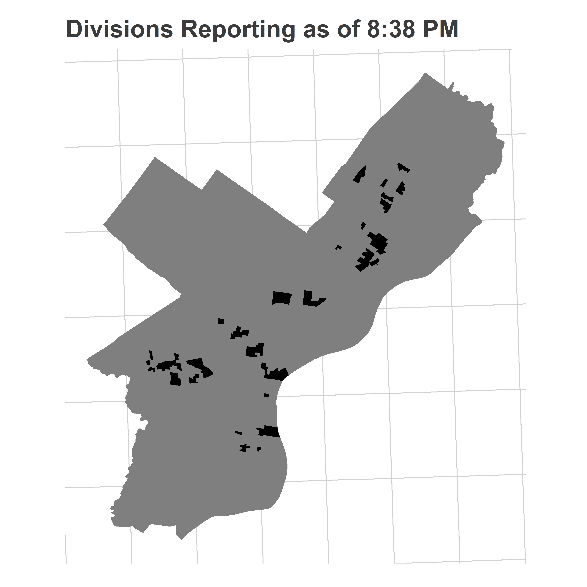
Here are the votes for the Council At Large candidates who eventually end up in the top six (though Rivera Reyes led DiBerardinis at the time).
View code
candidate_order <- df_838 %>%
# filter(OFFICE == "COUNCIL AT LARGE-DEM") %>%
group_by(candidate, OFFICE) %>%
summarise(votes = sum(Vote_Count)) %>%
group_by(OFFICE) %>%
arrange(desc(votes)) %>%
mutate(pvote = votes/ sum(votes)) %>%
group_by()
use_cands <- c("Gym", "Domb", "Green", "Thomas", "Gilmore Richardson", "DiBerardinis")
ggplot(
phila_whole
) +
geom_sf(fill = "grey50", color=NA) +
geom_sf(
data=divs %>%
inner_join(
df_838 %>%
mutate(
candidate = factor(candidate, use_cands)
) %>%
filter(candidate %in% use_cands)
),
aes(fill = pvote*100), color = NA
) +
scale_fill_viridis_c("Percent of Votes") +
geom_text(
data=candidate_order %>%
filter(candidate %in% use_cands) %>% mutate(candidate=factor(candidate, use_cands)),
aes(label = sprintf("%0.1f%%", 100 * pvote)),
x = 2755e3, y=218e3, size = 6, fontface="bold",
hjust=1, vjust=1,
color = "grey30"
)+
theme_map_sixtysix() %+replace% theme(legend.position = "right") +
facet_wrap(~candidate)+
ggtitle("At Large results as of 8:38 PM", "With unadjusted percent of vote so far.")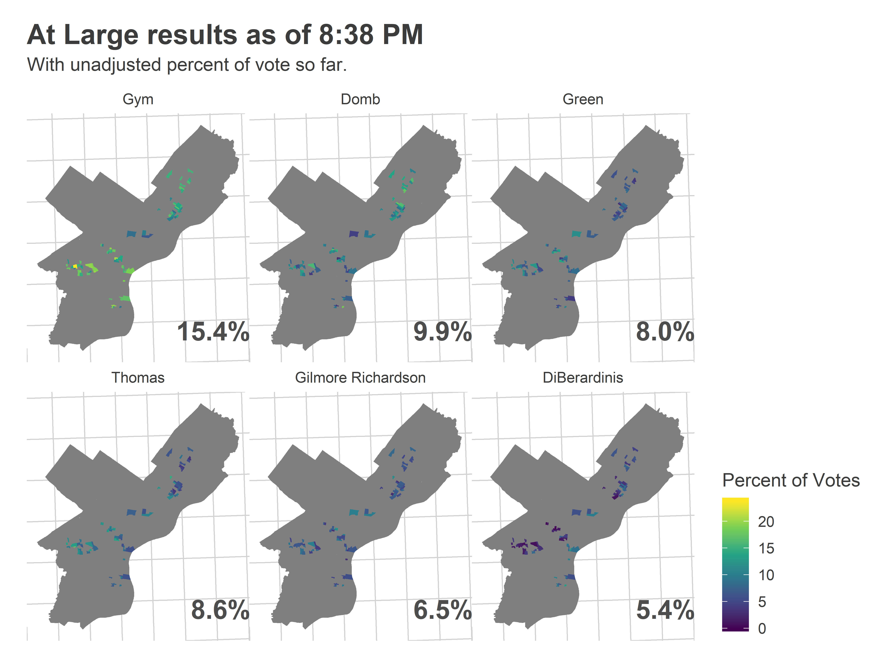 And here’s what the Needle predicted:
View code
turnout_dem <- get_turnout(df_838, "MAYOR-DEM", turnout_cov_dem)
council_at_large_838 <- get_needle_for_office(
df_838,
use_office="COUNCIL AT LARGE-DEM",
office_name="Council At Large (D)",
turnout_sim = turnout_dem,
n_winners=5
)
council_at_large_838$needle %+%
(council_at_large_838$needle$data %>% filter(candidate %in% use_cands)) +
theme(strip.text = element_text(face="bold", size = 12)) +
ggtitle("At Large probability of winning as of 8:38", "Rivera Reyes had the other 16% chance.")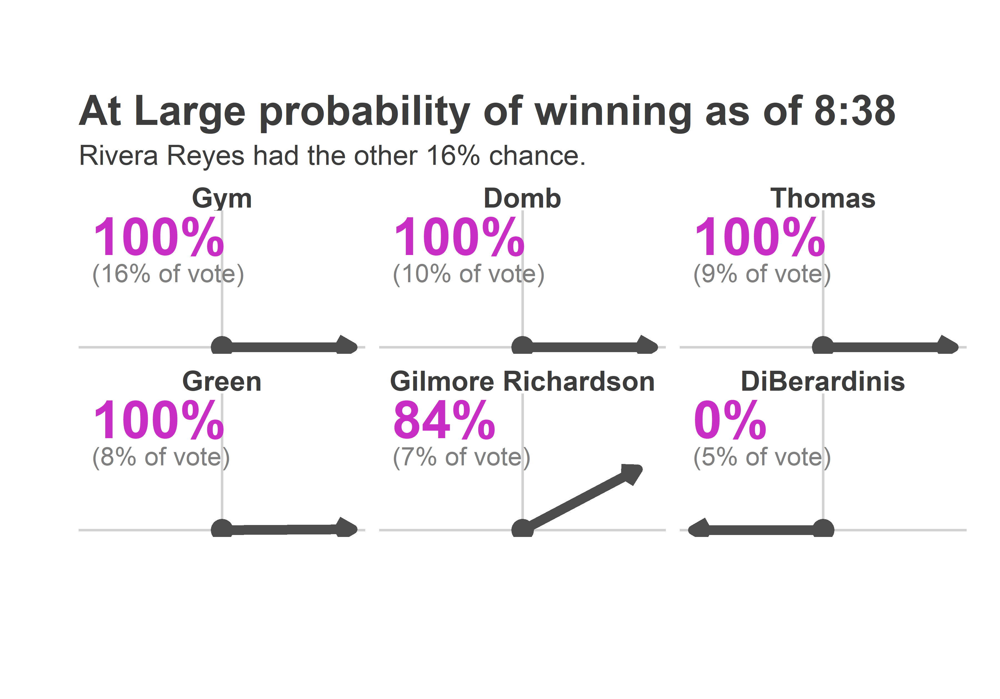
Wait what? You may not have looked at the maps above and thought “It’s over for DiBerardinis.” But the Needle did.
So why did the Needle think it was over? Let’s look at the average results from the simulations, focusing on Katherine Gilmore Richardson and Justin DiBerardinis, who finished 5 and 6.
View code
map_pred <- function(
df_obs,
df_sim,
candidates,
consider_divs=divs_to_council$warddiv,
color_max = 0.2,
color_min=0
){
df_obs <- df_obs[df_obs$candidate %in% candidates,]
df_sim <- df_sim[df_sim$candidate %in% candidates,] %>%
group_by(warddiv, candidate) %>%
summarise(pvote = mean(pvote))
df_obs$candidate <- factor(df_obs$candidate, levels = candidates)
df_sim$candidate <- factor(df_sim$candidate, levels = candidates)
df_sim$pvote <- pmin(df_sim$pvote, color_max)
ggplot(
divs %>% filter(warddiv %in% consider_divs)
) +
geom_sf(
data=divs %>% inner_join(df_sim),
aes(fill=100*pvote), color = NA
) +
geom_sf(
data=divs %>% inner_join(df_obs),
aes(fill=100*pvote), color="black"
) +
scale_fill_viridis_c("Percent\n of votes") +
expand_limits(fill = c(color_min, 100*color_max))+
facet_wrap(~candidate) +
theme_map_sixtysix() %+replace%
theme(
legend.position = "right",
strip.text = element_text(face="bold", size = 15)
)
}
map_pred(
df_838,
council_at_large_838$office_sim,
c("Gilmore Richardson", "DiBerardinis"),
color_max=0.2
) + ggtitle("Average Simulated Results at 8:38", "Reporting divisions are outlined.")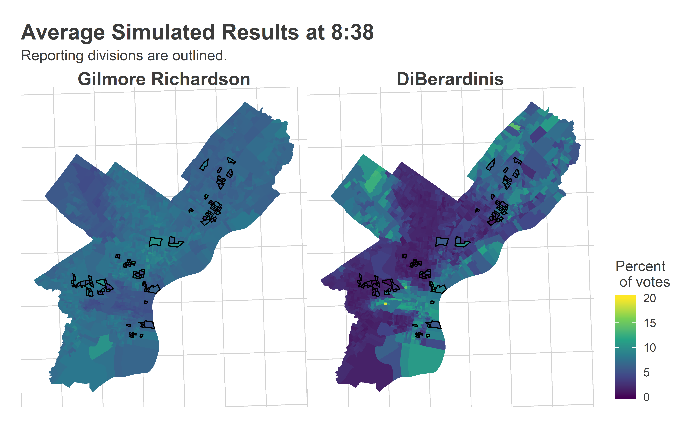
This is exactly what we want to see. Basically, with just 80 precincts reporting, the model had identified that Katherine was a broadly popular candidate, with a high floor and slightly stronger results in Black neighborhoods. It also figured out that Justin was going to do significantly better in wealthier neighborhoods and the Northeast than elsewhere.
(The thing that we wouldn’t want to see is uniformity across the city, or random noise.)
Your eye may not have noticed the divisions in Kensington, South Philly, and Mantua that went strongly Justin, but the Needle did. And it knew exactly how he would eventually split the city.
That was the average simulated result, but just as important is the variance in the result. A candidate’s probability of winning depends on how many times their simulation is higher than the others’. If that candidate has highly variable swings, then they’ll win a larger percent of the time. Was it really true that among all the possible outcomes that could match the data we had so far observed, Justin won in zero of them?
Here is the range of outcomes the Needle gave to Justin at 8:38.
View code
histogram_simulation <- function(
office_sim_total,
candidate,
df_final,
time,
win_bar,
ndigits=0
){
final_p <- 100 * df_final$prop[df_final$candidate==candidate]
binwidth = 10^-ndigits
ggplot(
office_sim_total[office_sim_total$candidate == candidate,]
) +
geom_histogram(
aes(x=pvote * 100, y=stat(density)),
boundary=0,
binwidth=binwidth,
fill = strong_blue
) +
geom_vline(xintercept = win_bar, linetype="dashed") +
annotate(
"text",
label=sprintf("Win Percent = %s%%", win_bar),
x=win_bar,
y=0,
hjust=0,
vjust=1.2,
angle=90
) +
geom_vline(
xintercept = final_p,
color = "grey20",
size=1
) +
annotate(
"text",
label=sprintf("Actual Final Result = %s%%", round(final_p, ndigits)),
x=final_p,
y=0,
angle=90,
vjust=1.2,
hjust=0
) +
xlab("Percent of Vote") +
ylab("Density of Simulations") +
theme_sixtysix() +
ggtitle(sprintf("%s's Simulated Results at %s", candidate, time))
}
final_at_large <- df_full %>%
filter(OFFICE == "COUNCIL AT LARGE-DEM") %>%
group_by(candidate) %>%
summarise(votes = sum(Vote_Count)) %>%
group_by() %>%
mutate(prop = votes/sum(votes))
histogram_simulation(
council_at_large_838$office_sim_total,
"DiBerardinis",
final_at_large,
"8:38",
6.6,
ndigits=1
)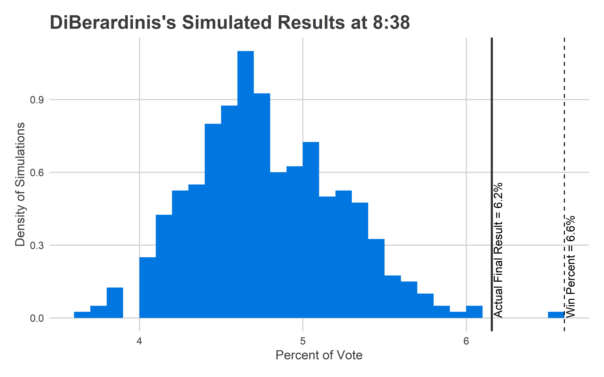
This isn’t good. The Needle was confident that Justin would finish between 4-6%, and he ended up at 6.2%. That wasn’t close to the 6.6% needed to win, but it’s still an outcome the model says is basically impossible.
What happened? It must be that there’s an additional source of uncertainty, a way that the division-level errors are correlated that I haven’t accounted for. I have two guesses.
The first is turnout. Here’s what the Needle thought turnout would look like at 8:38.
View code
map_turnout <- function(
df_obs,
turnout_sim,
consider_divs=divs_to_council$warddiv,
use_outline=TRUE
){
turnout_obs <- df_obs %>%
filter(OFFICE == "MAYOR-DEM") %>%
group_by(warddiv) %>%
summarise(turnout = sum(Vote_Count))
turnout_sim <- turnout_sim %>%
group_by(warddiv) %>%
summarise(turnout = mean(turnout))
color_max <- 10e3
ggplot(
divs %>% filter(warddiv %in% consider_divs)
) +
geom_sf(
data=divs %>% inner_join(turnout_sim),
aes(fill=pmin(turnout / Shape__Are * 5280^2, color_max)),
color = NA
) +
geom_sf(
data=divs %>% inner_join(turnout_obs),
aes(fill=pmin(turnout / Shape__Are * 5280^2, color_max)),
color={if(use_outline) "black" else NA}
) +
scale_fill_viridis_c(
"Votes per\n Sq. Mile",
labels=function(x) ifelse(x >= color_max, paste0(scales::comma(x),"+"), scales::comma(x))
) +
theme_map_sixtysix()
}
map_turnout(df_838, turnout_dem) +
ggtitle("Projected Turnout at 8:38", "Reporting divisions are outlined.")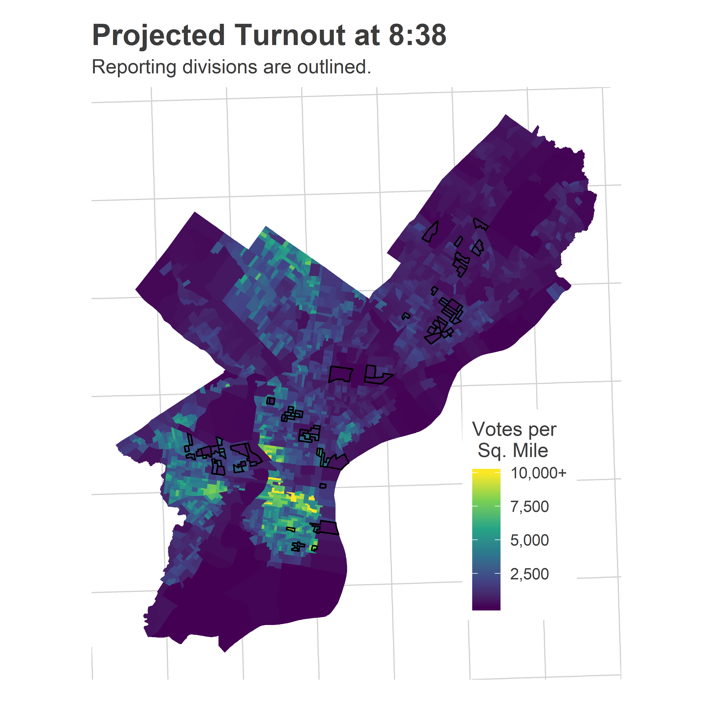
Here’s what the turnout actually ended up looking like.
View code
map_turnout(df_full, turnout_dem[integer(0),], use_outline=FALSE) +
ggtitle("Final Turnout")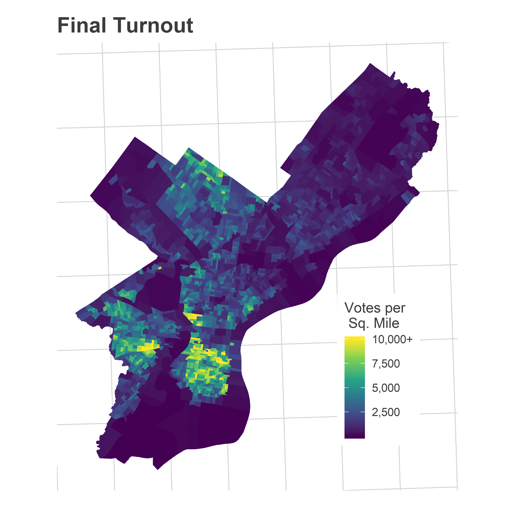
The model did captured the broad pattern, but the average wasn’t enthusiastic enough about Center City/South Philly/University City turnout. Notice that’s also Justin’s base.
Underestimating turnout on average isn’t itself wrong. In fact, some of the individual simulations look a lot like this map:
View code
use_sim <- turnout_dem %>%
filter(substr(warddiv, 1, 2) == "27") %>%
group_by(sim) %>%
summarise(turnout_27 = sum(turnout)) %>%
arrange(desc(turnout_27)) %>%
with(sim[1])
map_turnout(
df_838,
turnout_dem %>% filter(sim==use_sim),
use_outline=FALSE
) +
ggtitle(sprintf("Simulation %s's Turnout", use_sim))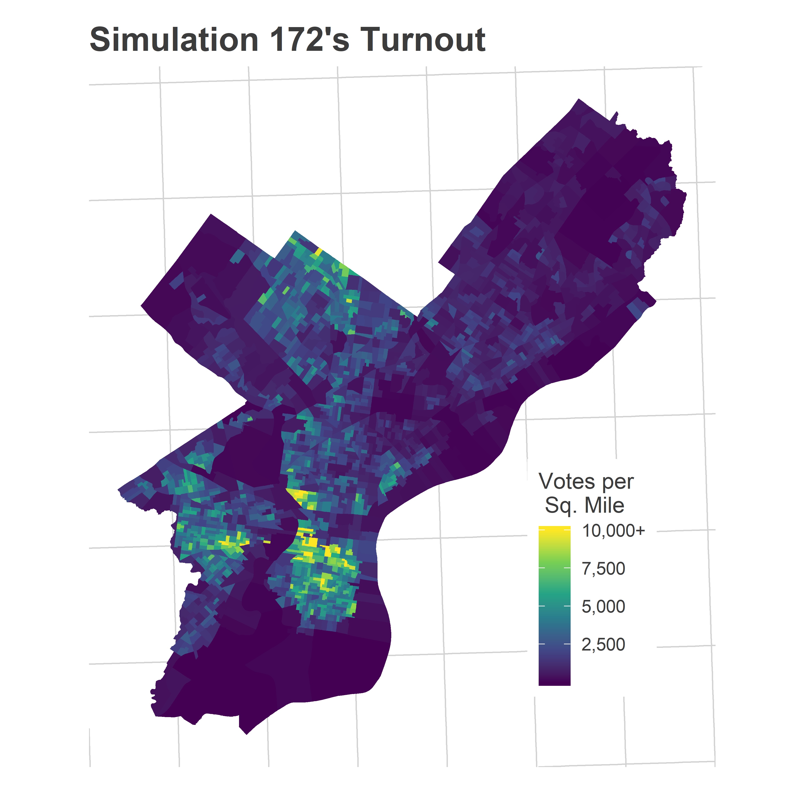
The problem, though, is that the model didn’t allow for a candidate’s performance to be correlated with turnout (it randomly sampled turnout, then the candidate’s performance independently). Instead, it’s likely that a candidate’s performance is able to itself drive turnout; this would have increased Justin’s ceiling in the model.
The second possibility is that I didn’t allow for enough ward-level correlation. I have city-wide correlations through the SVD, but it would be easy to add ward-level random effects, which account for the fact that wards as a whole may swing together, even separately from demographically similar wards in other parts of the city. This would add correlated uncertainty to the model, and make it a little less certain.
Finally, it might be productive to add in a prior for candidates. Remember that the model didn’t know anything about the candidates heading in. If I had pre-programmed the notion that DiBerardinis would do better in Center City than elsewhere, or added in some Ward endorsements, it may have been more bullish on his chances, rather than simultaneously having to allow for all of the possibilities of his performance in Center City.
Calling District 3
The big upset in the city was Jamie Gauthier in West Philly’s District 3. I was ready to call that one at 9:38.
View code
use_cands <- c("Gauthier", "Blackwell")
ggplot(
divs %>% filter(warddiv %in% divs_to_council$warddiv[divs_to_council$council==3])
) +
geom_sf(fill = "grey50", color=NA) +
geom_sf(
data=divs %>%
inner_join(
df_938 %>%
filter(OFFICE == "DISTRICT COUNCIL-3RD DISTRICT-DEM") %>%
mutate(candidate = factor(candidate, use_cands))
),
aes(fill = pvote*100), color = NA
) +
scale_fill_viridis_c("Percent of Votes") +
geom_text(
data=candidate_order %>% filter(candidate %in% use_cands),
aes(label = sprintf("%0.1f%%", 100 * pvote)),
x = 2690e3, y=228e3, size = 10, fontface="bold",
hjust=1, vjust=1,
color = "grey30"
)+
theme_map_sixtysix()%+replace%
theme(
legend.position = "right",
strip.text = element_text(face="bold", size = 15)
) +
facet_wrap(~candidate)+
ggtitle("District 3 results as of 9:38 PM", "With unadjusted percent of vote so far.")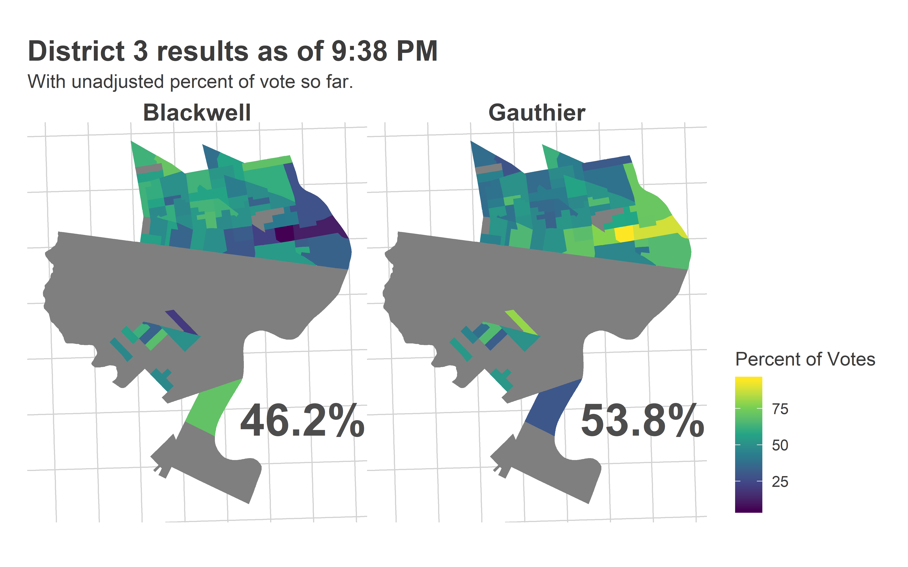 Most of the reporting precincts were above Market Street, with a handful coming from the 51st in Southwest.
Here’s what the Needle thought:
View code
district_3_938 <- get_needle_for_office(
df_938,
use_office="DISTRICT COUNCIL-3RD DISTRICT-DEM",
office_name="District 3",
turnout_sim = turnout_dem,
consider_divs=divs_to_council$warddiv[divs_to_council$council==3],
n_winners=1
)
district_3_938$needle +
ggtitle("Predictions for District 3 at 9:38")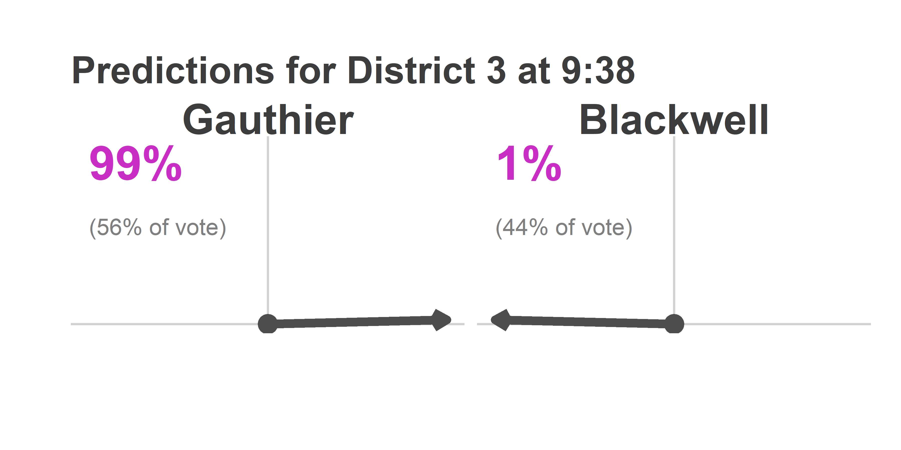
Here’s what a family friend thought. 
The Inquirer didn’t end up calling the race until about 10:30. So was the Needle right to be so confident? Here is the average of its 9:38 predictions.
View code
map_pred(
df_938,
district_3_938$office_sim,
candidates=c("Blackwell", "Gauthier"),
consider_divs=divs_to_council$warddiv[divs_to_council$council==3],
color_max = 0.8,
color_min = 0.2
) +
ggtitle("District 3 Simulated Results at 9:38", "Reporting divisions outlined in black.")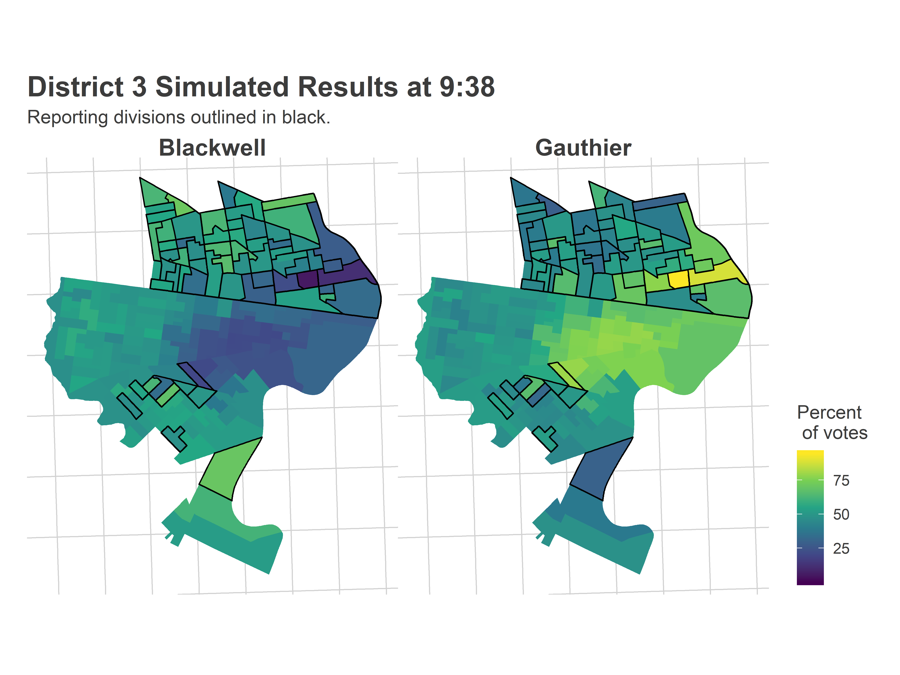
The Needle saw the Jamie divisions in Powelton and at the edge of gentrified University City, and knew that she would do well in the high-turnout University City divisions left to report. But more importantly, it also identified that she would run basically even with Jannie in farther West Philly (she ended up losing the area only 53-47).
Here’s the range of simulated results the model made at 9:38.
View code
final_d3 <- df_full %>%
filter(OFFICE == "DISTRICT COUNCIL-3RD DISTRICT-DEM") %>%
group_by(candidate) %>%
summarise(votes = sum(Vote_Count)) %>%
group_by() %>%
mutate(prop = votes/sum(votes))
histogram_simulation(
district_3_938$office_sim_total,
"Gauthier",
final_d3,
"9:38",
50,
ndigits=0
)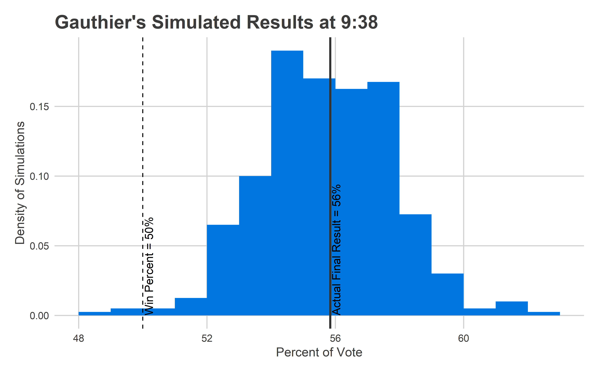
It was dead on. The model said Jamie would have a modal win of 56% of the vote, she did. It said she had only a 0.5% chance of losing. She didn’t.
Model performance
Notice that Justin’s final performance was at the top of the simulations, while Jamie’s was right in the heart of the distribution. This gives a useful way to evaluate the model. We can calculate the percentile of the final results versus the simulated distribution. Justin’s final result was the 99.75th percentile of the simulations, Jamie’s was the 51st percentile of hers. If the model is well-calibrated, then these percentiles should be uniformly distributed between 0 and 1.
Alternatively, if we sort and then plot them, they should fall on the line y=x, maybe with some noise. Here’s that plot for At Large at 9:38.
View code
council_at_large_838$office_sim_total %>%
left_join(final_at_large) %>%
group_by(candidate) %>%
summarise(percentile = mean(pvote < prop)) %>%
ggplot() +
geom_abline(intercept = 0, slope = 1)+
geom_point(aes(x=(rank(percentile)-0.5)/30, y=percentile)) +
coord_fixed() +
ylab("Final results as percentile")+
xlab("Candidate's percentile rank") +
theme_sixtysix() +
ggtitle("Final results vs simulations", "Percentile of Simulations at 8:38, Council at Large")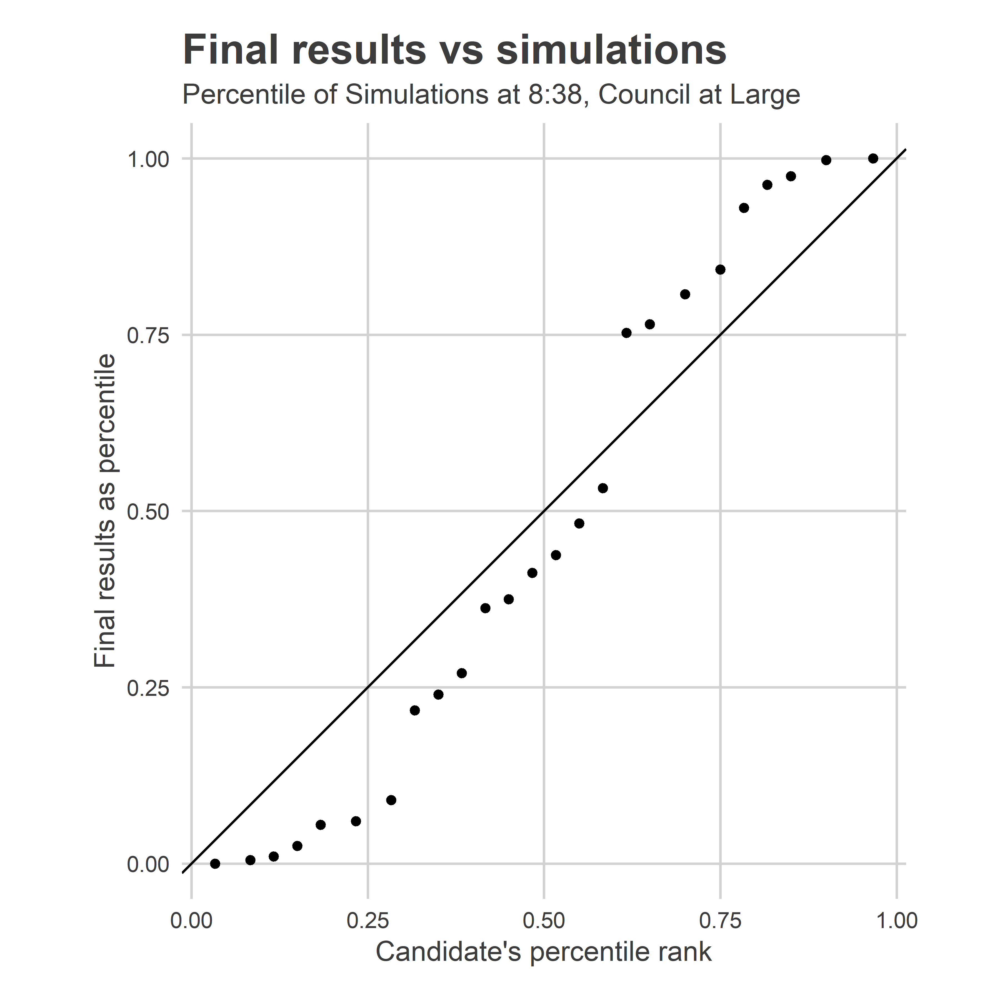
This plot shows that we have too many values on the extremes: the high predictions are too high, the low ones are too low. This is a hallmark of the fact that the prediction intervals are too narrow, and didn’t allow enough uncertainty. It’s not terrible, but can be improved.
So are the race-callers wrong?
I’m claiming the Needle was basically right, if a little over-confident in a way I can fix. My hunch is that even after I tweak it, the model would still have been able to call all the races by 10pm, a lot faster than the race-callers in the media. Are the race-callers wrong to be so slow?
I think there are two things going on.
First, the incentives for the papers are to be super risk-averse. Getting a call wrong is a lot worse than waiting 30 minutes. And they have a lot more readership than I do.
When the needle is 99% sure, that 1% may still be just too large to warrant a newspaper making a call. If you have 5 races in each of 2 elections every year, you would expect to get a call wrong once a decade. That’s probably bad. Couple in the likelihood of maybe your model isn’t perfectly calibrated, and you may want to be especially cautious.
But second, people often don’t realize just how much information is contained in the historic data. They see a map like District 3’s 9:38 map above, and only notice the vast West Philly non-reports, and imagine a full range of possibilities. In their head, they imagine that those could swing +/- 10 points, leading to very different final outcomes. The truth is, though, that with 17 years worth of data (I have back to 2002), that uncertainty is really only +/- 4 points. You need a full model to tell you if the probability of a comeback is 10%, 1% or 0.1%.
One third thing that’s going on (I know I said two…) is that our elections aren’t really that close. Gauthier won by 12 points. In presidential elections, that would be the largest gap since Reagan beat Mondale in ’84. At 9:38, I was able to predict Gauthier within +/- 4 points. In a closer race I wouldn’t have been sure of the final outcome; in this one I was. Four point uncertainty on 56% of the vote means we know who will win. It’s similar with At Large, though with even smaller numbers. It took 6.6% of the vote to win (voters could vote for up to 5). At 8:38, I thought Justin would win about 4.8% of the vote. Getting up to 6.6 requires him receiving *38%* more votes than he currently was. That’s a huge ask, even if two percentage points looks small on paper.
The Needle will be back in November!
I’ll retool the needle using the insights above, and then we’ll be back in November! Municipal Election Novembers can be sleepy, but we’ve got some potentially interesting races, including District 10 Republican incumbent Brian O’Neill being challenged by Democrat Judy Moore, and whether maybe, possibly, a third party At Large candidate could beat one of the Republicans. More on each of those soon.